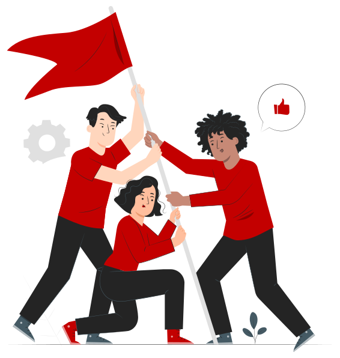
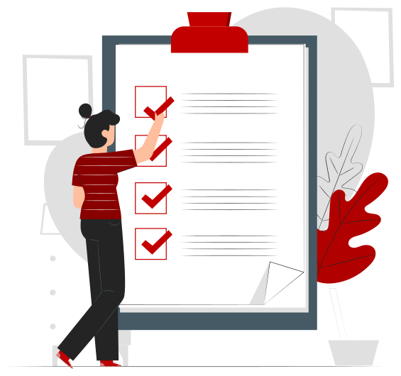
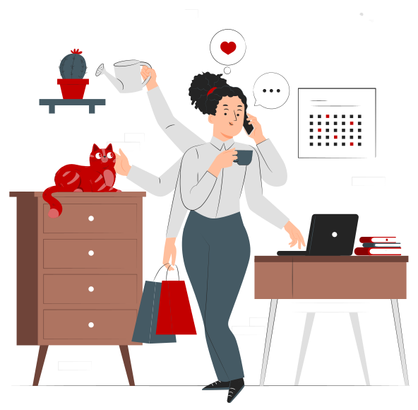
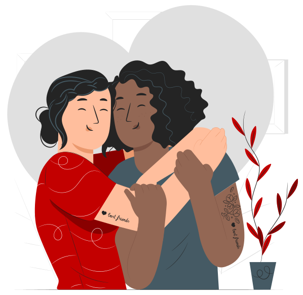
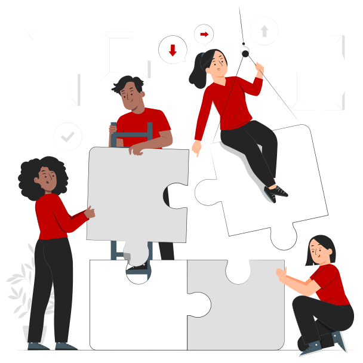
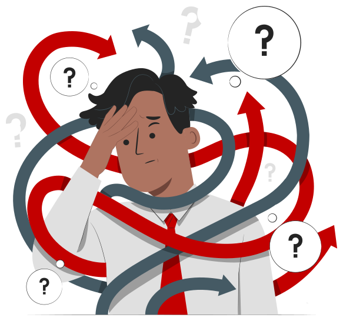

Escolhe o idiomaChoose your language
Sport Lisboa e Benfica · Toolkit
Psychological First Aid at Work
Recognise signs of psychological distress, in yourself, in a colleague or in the team, and respond in a human, safe and structured way. For everyone who works at Benfica: from the Estádio da Luz to the Seixal Campus, from the Museum to the stores and central services.

What it is and who it is for
A practical guide to Psychological First Aid (PFA) for everyone who works at Benfica
It helps you recognise signs of psychological distress, in yourself, in a colleague or in your team, and respond in a humane, safe and structured way, following a simple logic:
- 1Observe
- 2Listen
- 3Link to the right support
It is for every employee and leader, in any role or area. It requires no clinical training: it asks for availability, attention and respect for others. It brings together checklists, flowcharts, videos and exercises, so you have what you need to hand in each situation.

What it does not replace
PFA is a first line of support
- It is not psychotherapy, clinical counselling or diagnostic assessment
- It does not ask you to analyse what happened or to solve the person’s problem
- This material does not replace professional psychological support, medical care or Benfica's internal procedures
Its aim is to help you be present and to link the person to the right support.
In risk situations, turn to Module 6 or, in an emergency, call 112.
When to use it
This toolkit goes with you through different moments
Click on each moment to see where to find an answer. 0 of 5 seen
Module 3 · A
In everyday work, for prevention and self-care
Recognise warning signs in yourself and look after your balance.
Go to Module 3 · A
Module 3 · B
When you notice a colleague seems different or is in distress
And you want to know how to approach them.
Go to Module 3 · B

Module 5
In sensitive situations
Burnout, bereavement, panic, conflict, crisis or suicide.
Go to Module 5
Module 6
When you need to refer someone or find support contacts
The essential contacts are also always at hand in the Support button.
How to navigate
Five modules, to look up whenever you need
You do not need to see everything in one go: use the Contents and go straight to the situation you need. Each module has one or more pages, to read from top to bottom, and the Toolkit remembers where you left off. The Support button has the help contacts on every page, and the red dot marks what you have not opened yet.
- Module 2
Psychological First Aid in the Workplace
Context, psychosocial risks and PFA
- Module 3
If I am an Employee
I am going through a difficult time · A colleague is in distress
- Module 4
If I am a Leader
Identifying signs in the team · How to approach an employee
- Module 5
Sensitive Situations
Burnout, grief, panic, disasters, aggression, crisis, conflict, members and fans, and suicide
- Module 6
Referral and Resources
When to refer and support contacts
Module 1 completed
You have finished this module
You have seen every screen in this module.